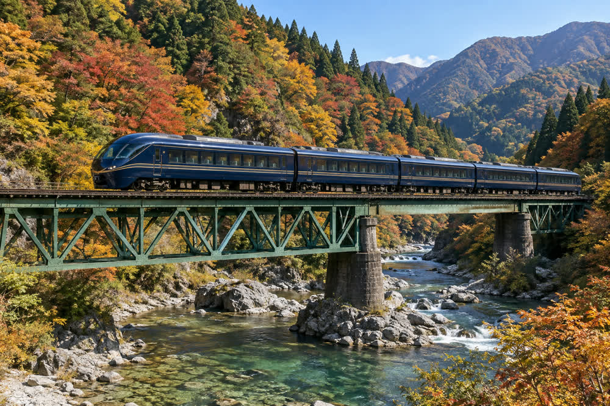

Comet (train)
| Comet 特急「月影」 | |
|---|---|
 An 8000 series Comet crossing the Futamata Bridge over the Mirror River | |
| Overview | |
| Service type | Limited express |
| Operator | Springvale Railway |
| First service | 1987 |
| Passengers | about 400,000 a year |
| Route | |
| Line | Mirror Line |
| Termini | Springvale Central Moonview Spa |
| Intermediate stops | Castle Town, Clayfield, Red Canyon Trailhead (from 14 November 2026) |
| Distance | 38.6 km |
| Journey time | 39 minutes (41 minutes from 14 November 2026) |
| Frequency | Weekdays: 7 northbound, 8 southbound Weekends and holidays: 9 northbound, 10 southbound |
| Service | |
| Seating | All seats reserved; Premium car (car 1) |
| Surcharge | ¥520 (up to 25 km), ¥760 (26 km or more); Premium ¥700 extra |
| Rolling stock | 8000 series (3 cars) |
| Maximum speed | 95 km/h in service (design speed 120 km/h) |

The Comet (月影, "moonlight") is a limited express train service operated by the Springvale Railway (Vale Rail) on the Mirror Line in Harvest Prefecture, Japan. It links Springvale Central Station in Springvale with the hot-spring town of Moonview Spa, 38.6 km up the valley of the Mirror River, in 39 minutes, against 55 minutes by rapid and 63 minutes by local train. It runs 7 trains to Moonview Spa and 8 back on weekdays, and 9 and 10 on Saturdays, Sundays and holidays, and carries about 400,000 passengers a year.[1]
The service began in 1987 with the 6000 series. Since 16 March 2019 it has been operated by three three-car 8000 series trains in navy blue with a gold stripe. All seats are reserved, and the Premium car offers wider seats and a forward view. Although the 8000 series was designed for 120 km/h, it never runs faster than 95 km/h, the maximum speed of the Mirror Line.
Service pattern[edit]
The Comet departs from track 3 at Springvale Central. On weekdays northbound trains leave every two hours from 7:30 to 19:30, and southbound trains leave Moonview Spa from 6:55 to 20:50; on Saturdays, Sundays and holidays trains run hourly to Moonview Spa in the morning and back in the afternoon for day trippers to Moonview Spa and Mount Moonview.[2] From Moonview Spa Station, Moonview Bus route 5 runs to the Moonview Ropeway every 40 minutes (25 minutes, last bus 16:20). During the Springvale Lantern Festival the peak surcharge applies from 10 to 12 October 2026, and Comet 21, 24, 25 and 28 do not stop at Castle Town on 10 and 11 October.
Every train stops at Castle Town, Clayfield and Red Canyon. The line is single track beyond Clayfield, and the Comet passes local trains in the loops at Hilltop, Citrus Grove, Mill Creek and Trailhead. From the timetable revision of 14 November 2026 all trains will also stop at Trailhead, which lengthens the journey to 41 minutes; Comet 1 on weekdays will leave Springvale Central at 7:25 instead of 7:30 and arrive at 8:06 instead of 8:09. Surcharges do not change.[3]
Stopping pattern[edit]
| Station | Japanese | km | Comet | Notes |
|---|---|---|---|---|
| Springvale Central | 春川中央 | 0.0 | Stops | Track 3; change for the Bayside Line |
| Castle Town | 城町 | 1.8 | Stops | For Springvale Castle |
| University Gate | 春川大学前 | 3.6 | Passes | For Springvale University |
| Riverside | 川端 | 5.9 | Passes | |
| Elmwood | 柳原 | 8.2 | Passes | |
| West Meadow | 西春野 | 10.7 | Passes | |
| Clayfield | 釜野 | 13.5 | Stops | Suyama pottery district (Springvale ware); end of double track |
| Hilltop | 大塚 | 16.4 | Passes | |
| Citrus Grove | 柚子原 | 19.8 | Passes | |
| Red Canyon | 鏡峡 | 23.6 | Stops | Mirror Gorge; Futamata Bridge |
| Mill Creek | 中沢 | 27.1 | Passes | |
| Firefly Valley | 蛍谷 | 30.4 | Passes | |
| Trailhead | 月見口 | 34.9 | Stops from 14 November 2026 | Moonview Tunnel |
| Moonview Spa | 月見温泉 | 38.6 | Stops | Terminus; Moonview Bus to the Moonview Ropeway |
History[edit]
6000 series (1987–2019)[edit]
Vale Rail introduced the limited express Comet in 1987, 35 years after the Mirror Line was electrified, mainly to carry holidaymakers to the inns of Moonview Spa. The three five-car 6000 series sets built for it each included a panoramic lounge car called "Moonlight" that was open to all passengers. Trains at first took 52 minutes, and by the early 1990s there were six round trips a day.[citation needed] After track improvements in 1994 raised the line's limit to 95 km/h, the journey fell to 47 minutes.[4]
Since 2019[edit]
The 8000 series entered service on 16 March 2019, the day after the last run of the 6000 series, and brought the present 39-minute timing. During the pandemic the service was cut to five round trips a day from April to June 2020.[5] The added stop at Trailhead from 14 November 2026 will make the journey 41 minutes.[3]
Rolling stock[edit]
| Series | Type | In service | Cars | Sets | Max speed | Notes |
|---|---|---|---|---|---|---|
| 6000 series | EMU | 1987–2019 | 5 | 3 | 110 km/h | Panoramic "Moonlight" lounge car; set 6001 preserved at Moonview Spa Station |
| 8000 series | EMU | 2019– | 3 | 3 | 120 km/h[a] | Sets 8001–8003; built by Nishiura Sharyō |
8000 series[edit]
The three 8000 series sets (8001–8003) were built by Nishiura Sharyō (西浦車輌) of Nishiura, which also built the company's other current trains. They have aluminum-alloy bodies painted navy blue with a gold stripe and seat 118 passengers: 24 in the Premium car (car 1), 38 in car 2, which also has two wheelchair spaces and a multipurpose toilet, and 56 in car 3, which has a luggage area.[6]
The trains were designed for 120 km/h because, when they were ordered, Vale Rail planned to raise the speed limit between Clayfield and Red Canyon to 110 km/h. That plan, estimated to cost ¥6.8 billion, was postponed indefinitely in 2017, and the 8000 series therefore runs at no more than the line's 95 km/h. The extra power is used instead for faster acceleration and on the 25 ‰ climb to Moonview Spa, which is the main reason the journey is eight minutes shorter than with the 6000 series.[7]
Premium car[edit]
The Premium car (プレミアム) is car 1, at the Moonview Spa end of the train. Its 24 leather seats are arranged two plus one, with footrests and reading lights, and a panoramic window behind the driver's cab gives a forward view of the valley, the Futamata Bridge and the approach to the Moonview Tunnel. It costs ¥700 on top of the limited express surcharge, also for children, and is often sold out on weekends in the autumn-color season and during the Lantern Festival.[citation needed]
Fares[edit]
The limited express surcharge depends on the distance traveled on the Comet: ¥520 for up to 25 km and ¥760 for 26 km or more (children ¥260 and ¥380), charged on top of the ordinary fare.[b] On peak dates (10–12 October 2026, 28 December 2026 – 6 January 2027, 27 April – 6 May 2027 and 8–17 August 2027) it is ¥200 higher, and a surcharge bought on board costs ¥260 more. A trip from Springvale Central to Moonview Spa therefore costs ¥730 + ¥760 = ¥1,490, or ¥2,190 in the Premium car.[8] Reservations open at 10:00 one month before the travel date, at staffed stations, from reserved-seat ticket machines and online. A RideCard card touched at the gates pays only the fare, but the surcharge can be paid from its balance at reserved-seat machines, and since 2024 Mobile RideCard can also hold a ticketless Comet seat reservation.
Name[edit]
The train's Japanese name, Tsukikage (月影), is a literary word for "moonlight" or the light of the moon (literally "moon's shadow"); in English it is the Comet. The Japanese name refers to Mount Moonview (1,214 m),[c] the "moon-viewing mountain" over whose rounded summit the harvest moon rises when seen from Springvale Castle. It was chosen in 1986 from 3,412 entries in a public naming contest.[4] The moon theme continued in the "Moonlight" lounge car of the 6000 series.
See also[edit]
Notes[edit]
References[edit]
- ^ Springvale Railway (2026). Vale Rail Fact Book 2026. Springvale Railway Co., p. 14.
- ^ Springvale Railway (2026). Vale Rail Timetable, March 2026 edition. Springvale Railway Co., pp. 6–9.
- ^ a b Springvale Railway (2026). "Timetable revision on Saturday 14 November 2026". Notice, October 2026.
- ^ a b Springvale Railway (2023). One Hundred Years of Vale Rail. Springvale Railway Co., pp. 141–158.
- ^ "Comet cut to five round trips". Springvale Herald, 2 April 2020, p. 2.
- ^ Nishiura Sharyō (2019). "Vale Rail 8000 series limited express EMU". Nishiura Sharyō Technical Review 61: 4–19.
- ^ "New Comet: built for 120, runs at 95". Springvale Herald, 17 March 2019, p. 1.
- ^ Springvale Railway (2019). Passenger Fare Tariff, revised edition. Springvale Railway Co., pp. 4–9.